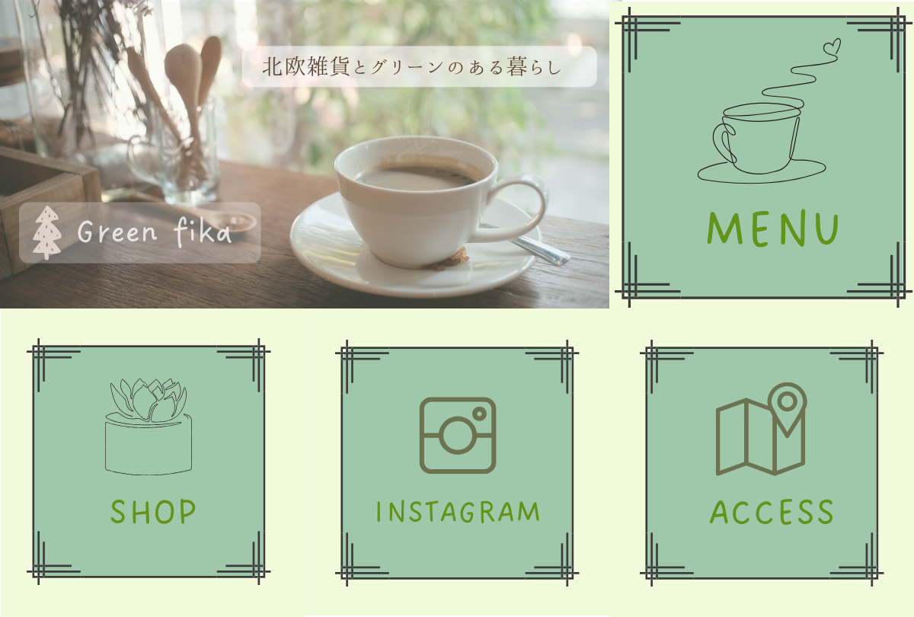

Green Fika LINEリッチメニュー

制作概要
北欧雑貨店を想定したLINE公式アカウント用リッチメニューです。
制作意図
店舗情報やオンラインショップへの導線を分かりやすく整理し、ナチュラルな世界観が伝わるデザインを目指しました。
ターゲット
20〜40代の北欧インテリアや観葉植物が好きな女性
工夫した点
- セージグリーンを基調とした落ち着いた配色
- 写真を大きく配置しブランドイメージを訴求
- ショップやInstagramへの導線を分かりやすく整理
- 北欧らしいナチュラルな世界観を表現
使用ツール
Canva
一覧へ戻る